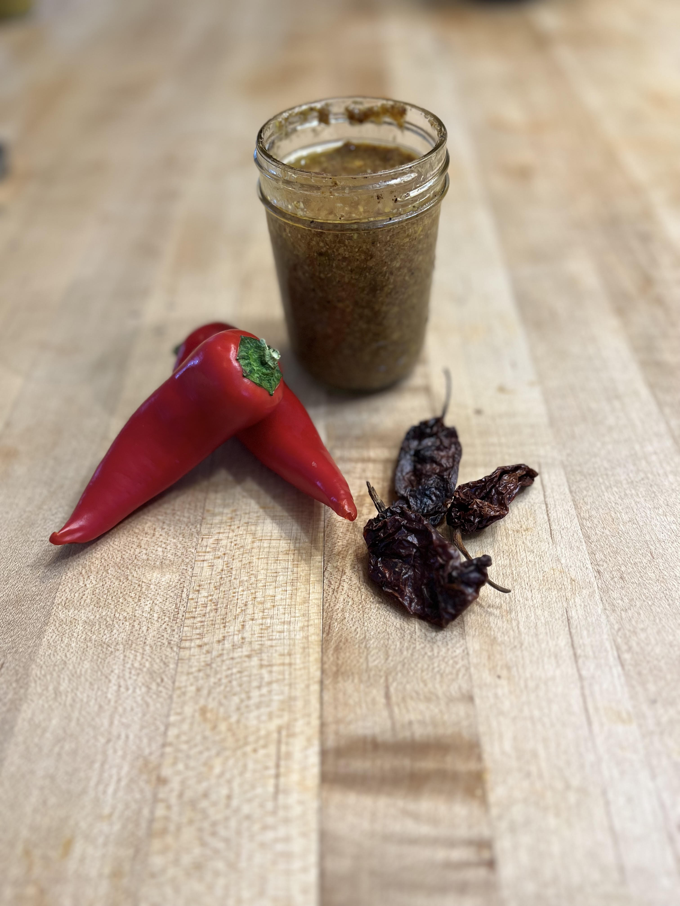

Spicy Mustard

This mustard is the perfect blend of garlicy and hot. I always keep a jar on hand!
This recipe makes about 16oz.
Ingredients
- 5-6 bulbs of garlic, peeled
- 4-6 hot peppers, I like habanero, but Trinidad Scorpion, Carolina Reaper, and Ghost
peppers all work great!
- Enough oil to confit the garlic and peppers
- 1 Tbsp black mustard seeds
- 1 tsp chili powder
- 2 Tbsp lime juice
- 2 Tbsp white vinegar
- 1 tsp salt
- 1/2 tsp black pepper
- Pinch of xanthan gum
Directions
- Peel the garlic and cut the stems off the peppers, confit with peppers, garlic, and salt
in the oil at 210F for 1 hour.
- Powder the mustard seed and combine with chili powder, lime juice, and vinegar.
Chill until confit is finished.
- Remove peppers and garlic from the oil and place into a blender. Add 1/4 cup of the oil,
a pinch of xanthan gum, black pepper, and the mustard seed mixture. Blend lightly to avoid
creating a mayo-like paste.
- If you prefer a thinner mustard, add water to preference.